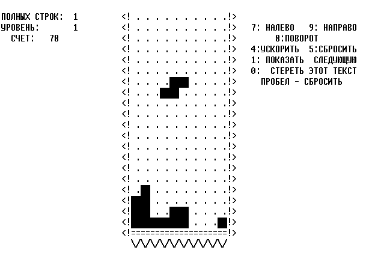
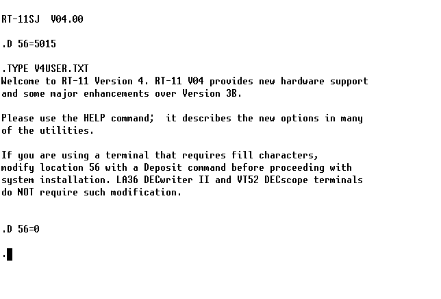
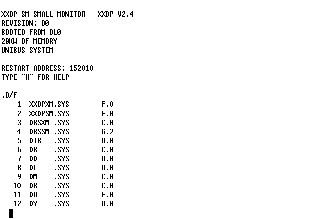

PDP-11 Emulator
I started a new emulator experiment, this time a PDP-11. The goal is to eventually be able to run Unix but that requires additional emulated hardware support. This first released version is able to run the original Tetris which is good enough for now. The result is an emulator that is kind of like a PDP-11/40, with the EIS and FIS instruction sets, but without the MMU support.
In order to run Tetris and other games for the RT-11 operating system, there is an emulated VT52 implementation which translates escape codes to curses calls. This VT52 implementation also has support for displaying KOI-7 Cyrillic characters as well as the VT52 special graphical characters, if Unicode is detected on the host system.
Instead of using VT52 emulation, a simpler LA36 (DECwriter) console can also be used which only uses basic ASCII control characters. This is useful when not running games and instead things like the plentiful MAINDEC-11 and XXDP tests. Storage wise, the emulator supports RL02 hard disk images, RX01 floppy disk images and loading paper tapes with a built-in 'Absolute Loader' mechanism.
The emulator is not cycle accurate. If programs are running too fast the speed can be slowed down by adjusting the rate of which stdin is polled, where a timeout of 1ms is used.
Find the code for version 0.1 here or check the GitHub, GitLab or Codeberg repositories.
Here is a screenshot of the original Tetris version:

Here is a screenshot of RT-11 v4.0 booted from RX01 floppy disk:

Here is a screenshot of XXDP booted from RL02 hard disk:

In all the screenshots, the terminal is using the Unscii font.
Here's also a video showing several RT-11 games.